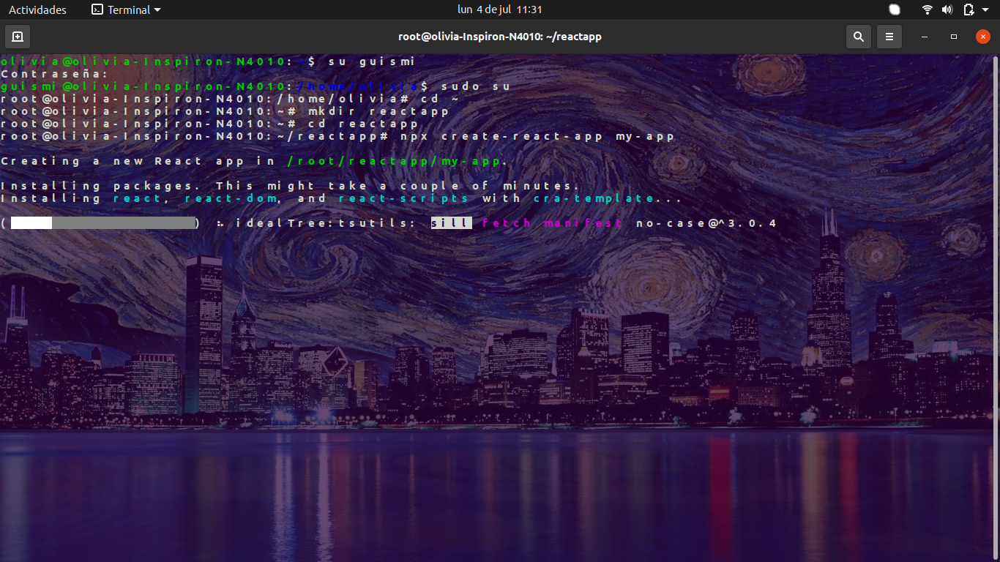

React Permission Denied/crear nuevo usuario de ubuntu desde la terminal
Intentas crear una app con react con el código:
npx create-react-app
Y a pesar de estar en la consola como superusuario, te arroja el error de:

Puedes ver mi video en youtube que te dejo en seguida explicando paso a paso la solución de este problema y/o leer este blog donde te explico todo...
No desesperes, la solución es mas simple de lo que imaginas... aunque un poco laboriosa, pero empecemos.
Cuando tienes un solo usuario, la cuenta de administrador, ubuntu te arroja ese error como una medida de seguridad para protegerse, por lo que es necesario crear un nuevo usuario que también pueda logearse como superusuario.
Para ello, vamos a crear un nuevo usuario y vamos a escribir los siguientes comandos:
sudo su
adduser (nombre del nuevo usuario, sin parentesis*)
Desde luego te va a pedir que establezcas una contraseña, anotala para no olvidarla :P
Por último vamos a darles los atributos de administrador al nuevo usuario
adduser (nombre del usuario) sudo
Muy bien!!! ahora el nuevo usuario también tiene atributos de super usuario.
Para pasar de un usuario a otro en la consola ahora solo vamos a escribir:
su (nombredeusuario)
De ahora en adelante solo vamos a poder trabajar en ese usuario para poder crear aplicaciones de react
Otro punto importante es que cuando vamos a crear un proyecto de react, tendrás que crearla estando en la carpeta raíz /root o en /home del nuevo usuario, como te muestro a continuación, si no, nos aparecerá nuevamente el error de permission denied
Una vez que hayas creado tu nuevo usuario, y tu proyecto, podemos proceder a instalar nodejs y a iniciar el proyecto en github para que puedas clonar tu proyecto ahí y acceder más facilmente a el desde cualquier lugar, puedes ver el tutorial de ambas acciones en las tarjetitas del menú de tarjetas :)